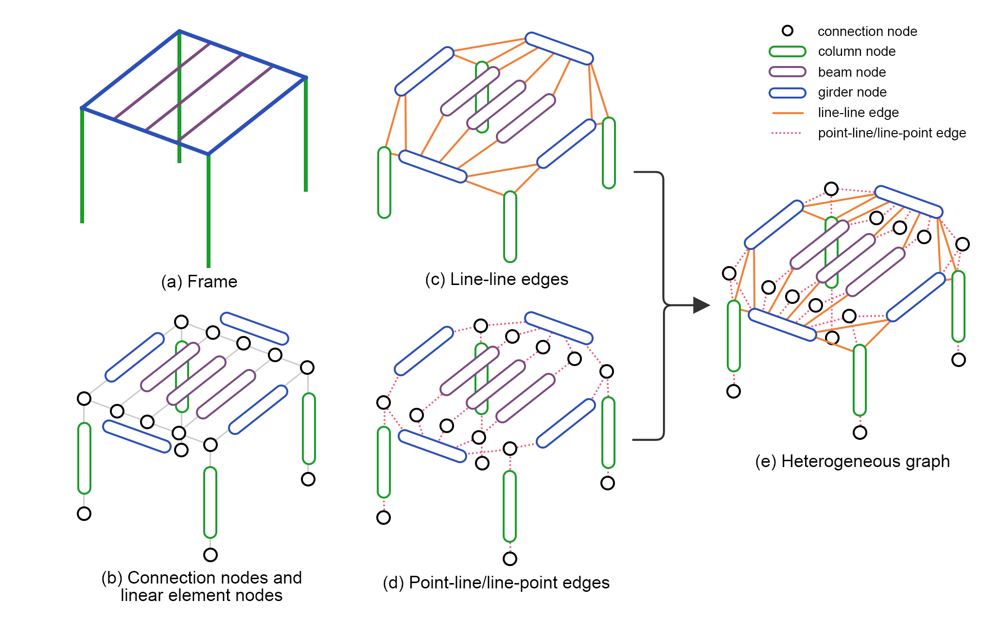
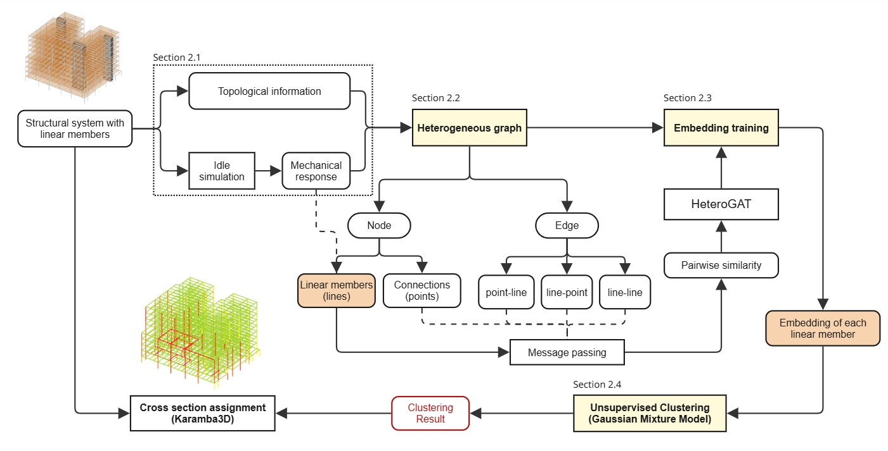
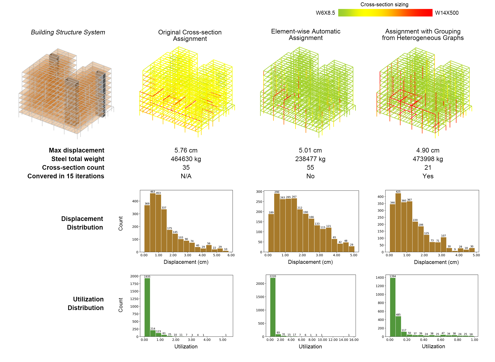
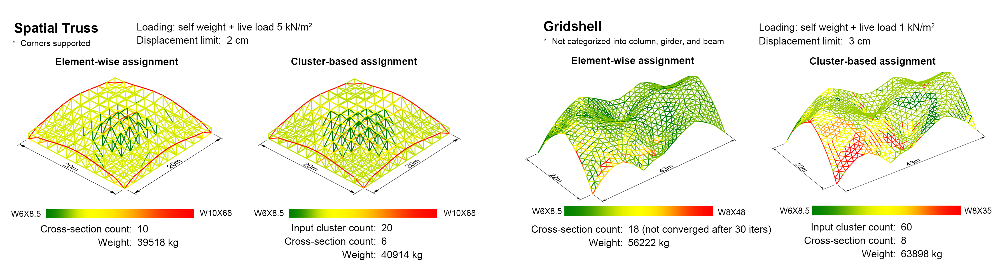

Mechanics-Guided Member Grouping for Cross-Section Optimization with Heterogeneous Graphs
The design problem
Optimizing every steel member independently can reduce weight, but it often creates too many different section sizes and a difficult search problem. The resulting design may be efficient on paper while becoming harder to fabricate, procure, coordinate, and converge computationally. This research asks whether structurally similar members can be identified first, then sized together as practical groups.
Turning a structure into a graph
The method represents a structural frame as a heterogeneous graph with two kinds of nodes: connection points and linear members. Each member carries geometric information and force responses from an initial finite-element simulation. Graph connections describe both physical incidence and adjacency between members. This lets the model understand not only where a member sits, but also how it participates in the load path.
How the workflow works
A Heterogeneous Graph Attention Network learns a compact representation for each member. Training brings members closer when they have similar mechanical responses or share structural connections. A Gaussian Mixture Model then clusters the learned representations separately for columns, girders, and beams. Finally, every member in a cluster shares a cross-section group during Karamba3D sizing.

Case study
The whole-building case study contains 2,395 steel members. The proposed method first reduces them to 120 learned groups, then assigns shared sections at the group level. The grouped solution converged within 15 iterations and used 21 cross-section types. By comparison, element-wise sizing produced 55 types and did not converge within the tested iteration limit.
The grouped design achieved a maximum displacement of 4.90 cm, lower than the original reference design, while keeping total steel weight comparable to that reference. More importantly, member utilization stayed within a safer and more controlled range. The result illustrates the main tradeoff: a small weight penalty relative to a fully individualized solution can yield a much simpler, safer, and more reliable section system.

Beyond one building
Additional tests on a spatial truss and a gridshell suggest that the same idea can extend to different structural systems. The learned groups can recognize meaningful structural regions, such as a ring beam, while still allowing curved and irregular systems to be sized with a manageable set of sections.

Conclusion
The method introduces a group-aware layer between structural analysis and sizing, helping designers balance structural performance with constructability and computational stability. It is particularly useful during early-stage design, when clear and rationalized decisions can be more valuable than a narrowly optimized member-by-member result.